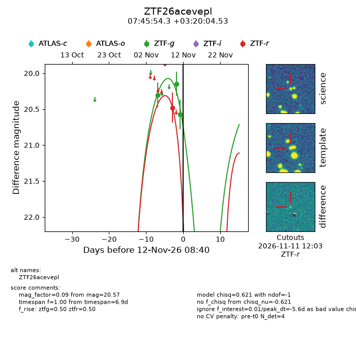
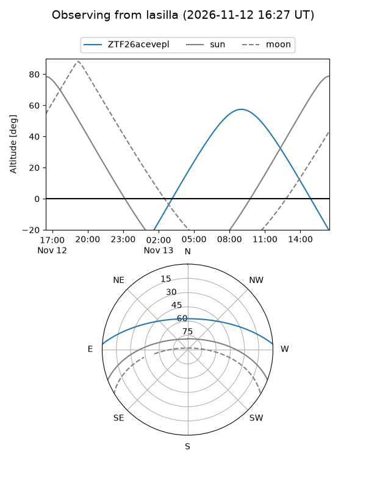
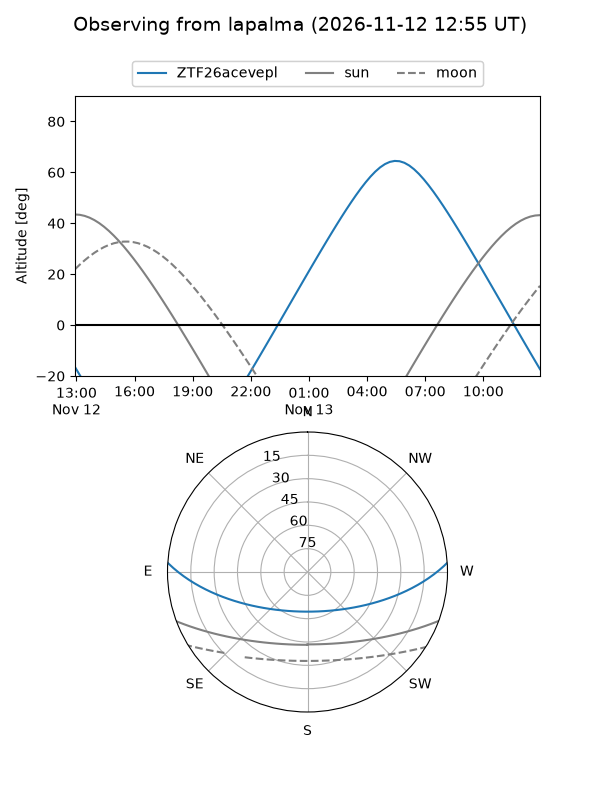
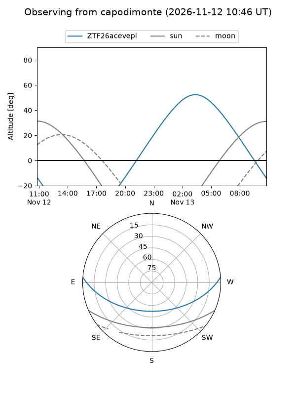
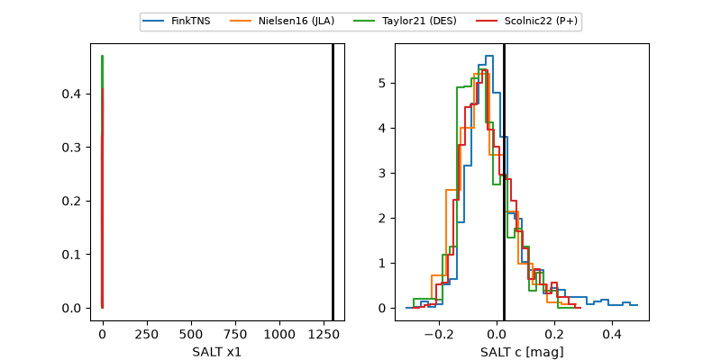

ZTF26acevepl
Target ZTF26acevepl at 2026-11-12 08:44
Aliases and brokers:
FINK-ZTF: ztf.fink-portal.org/ZTF26acevepl
Lasair-ZTF: lasair-ztf.lsst.ac.uk/objects/ZTF26acevepl
ALeRCE-ZTF: alerce.online/object/ZTF26acevepl
Direct TNS query: direct search
alt names
ZTF26acevepl (ztf,fink_ztf)
Coordinates:
equatorial (ra, dec) = 116.4763,+3.33459
equatorial (HMS+DMS) = 07:45:54.32,+03:20:04.53
galactic (l, b) = (216.2000,+13.63269)
Flags:
peak dt: -5.6
Photometry:
last ztfg=20.57, ztfr=20.48
3 ztfg, 1 ztfr detections
Lightcurve

Visibility



Additional plots
